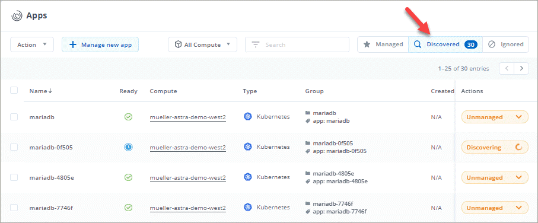
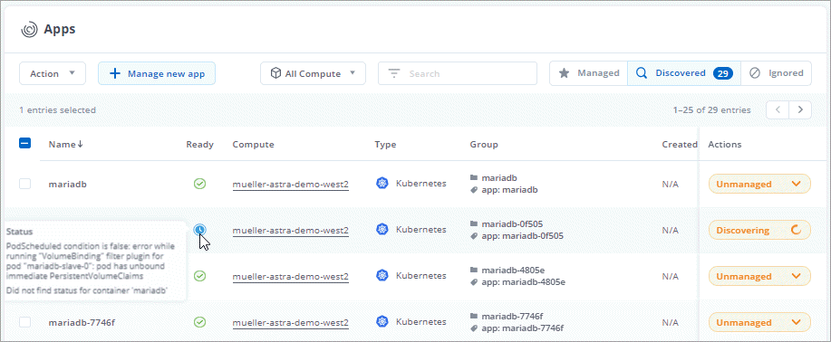
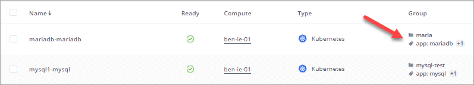
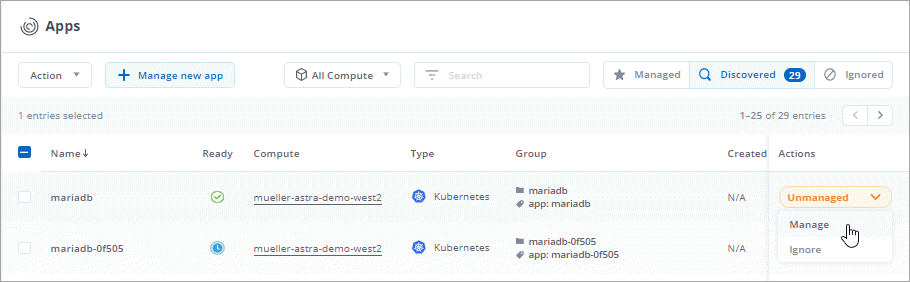
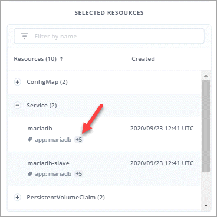
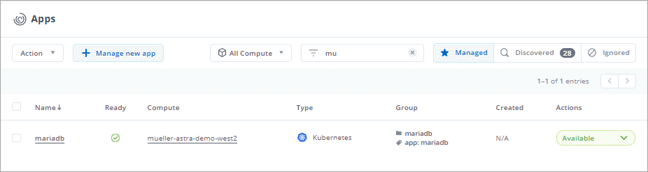
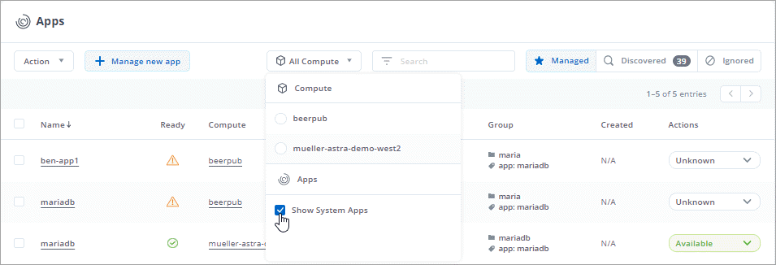

Start managing apps
Contributors
 Download PDF of this page
Download PDF of this page
After you a Kubernetes cluster to the Project Astra beta program, go to the Apps page to start managing the apps that run on the cluster.
Start managing an app
View the apps that you can discover from the Discovered section of the Apps page and then click Manage.
-
Click Apps and then click Discovered.
If you just added the cluster to Project Astra, you’ll notice that some apps are in the process of being discovered.

If there are any issues with discovery, you can hover over the icon in the Ready column to view details about the issue.
In the following image, you can see that Project Astra is still in the process of discovering the app. Hovering over the Ready column shows the current status.

After Project Astra discovers an app, you have the option to either manage the app or ignore it.
-
Look at the Group column to see which namespace the application is running in (it’s designated with the folder icon) and whether any Kubernetes labels are available (those are designated with a tag icon).
Here’s an example:

This information can be helpful because you might want to manage everything in the namespace, or you might want to manage the app using labels that you’ve already set up. You’ll see how to use these labels in a few steps.
-
Click the drop-down list in the Actions column for the desired app and click Manage.

-
In the Manage Application dialog box, provide the required information to manage the app:
-
New App: Customize the name of the app.
-
Selected Resources: View and manage the selected Kubernetes resources that you’d like to protect (pods, secrets, persistent volumes, and more). Here’s an example:

There are two primary ways to use the Selected Resources field:
-
View the resources to validate that the Kubernetes resources that you want to protect are listed.
-
If a namespace contains multiple discrete applications and you use Kubernetes labels to split apart the apps, then you can choose a label to register the app with, based on that label.
-
View the available labels by expanding a resource and clicking the number of labels.

-
Select one of the labels.

After you choose a label, it displays in the Label field. Project Astra also updates the Unselected Resources section to show the resources that don’t match the selected label.
-
View Unselected Resources to verify the app resources that you don’t want to protect.

-
-
-
-
Click Manage App.
The following video shows how to start managing an app.
Project Astra enables management of the app. You can now find it in the Managed tab.

Repeat these steps for additional apps. Choose Ignore for any of the apps that you don’t want to manage from Project Astra. Those apps will move to the Ignored tab. Ideally, you’d have zero clusters listed in the Discovered tab after you’re done.
Manage an app using a custom label
Project Astra includes an action at the top of the Apps page named Manage new app. You can use this action to manage an app by using a custom label. For example, you might not want to use one of the discovered Helm labels to manage the app.
-
Click Apps > Manage new app.
-
In the Manage Application dialog box, provide the required information to manage the app:
-
New App: Customize the name of the app.
-
Compute: Select the compute where the app resides.
-
Namespace: Select the namespace for the app.
-
Label: Enter a custom label.
-
Selected Resources: View and manage the Kubernetes resources that you’d like to protect.
-
Unselected Resources: Verify the app resources that you don’t want to protect.
-
-
Click Manage App.
Project Astra enables management of the app. You can now find it in the Managed tab.
What about system apps?
When you add a Kubernetes cluster, Project Astra also discovers the system apps running on the cluster. You can view them by filtering the Apps list.

We don’t show you these system apps by default because it’s rare that you’d need to back them up.
 Edit on GitHub
Edit on GitHub